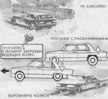

Трогание на скользкой дороге
При очень низком коэффициенте сцепления шин с дорогой (гладкий лед, раскатанная дорога), особенно на неровностях (яма, залитая водой, подъем с колеёй), это задача вызывает отрицательные эмоции даже у опытных водителей.
Многие водители, совершив начальную ошибку (пробуксовку), продолжают “держать газ”, ожидая зацепления, однако чаще всего этот способ не помогает. Если началась пробуксовка, колесо быстро разогревает снег или лед и между ним и дорогой образуется прослойка воды, которая мешает зацеплению. Чаще всего не удается использовать возможности другого ведущего колеса, стоящего на твердом грунте. Дифференциал выключает его, передавая всю мощность на буксующее колесо.
Секреты трогания следующие.
Первый оборот колеса должен быть без пробуксовки или с минимальной пробуксовкой.
Трогание “в натяг” выполняется на минимально устойчивой частоте вращения за счет задержки (пробуксовки) включения сцепления.
До начала трогания передние колеса автомобиля необходимо выровнять. Даже незначительный угол поворота способен затормозить автомобиль и спровоцировать пробуксовку.
Устранить допущенную ошибку (пробуксовку) желательно повторным троганием (выключением и включением сцепления).
При трогании необходимо учитывать механизм загрузки-разгрузки автомобиля по осям. При первом импульсе (включении сцепления) загружаются задние колеса, затем происходит их разгрузка из-за реакции подвески. Этот момент чаще всего способствует пробуксовке. На автомобиле с передним приводом желателен двойной выжим сцепления. Первым импульсом разгружаются передние колеса, повторным на них дается тяга в момент, когда автомобиль качнется вперед.

До начала трогания убедитесь, что колеса стоят прямо и первый оборот колеса происходит без пробуксовки.
Уменьшить пробуксовку можно, включив повышающую передачу или подтормозив задние колеса стояночным тормозом.
При трогании с раскачиванием автомобиля импульс трогания необходимо приурочить к моменту загрузки ведущих колес.
Если вы ошиблись и забуксовали – начните все сначала.
При трогании с раскачиванием автомобиля (при застревании в яме, песке, на льду) импульс трогания необходимо приурочить к моменту загрузки ведущих колес. Ждать, что автомобиль “зацепится” и начнет разгон – дело бесперспективное.
Трогаясь при минимальном коэффициенте сцепления (изморозь на асфальте, покрытый водой лед, обледенелый наст, укатанный и отполированный снег и т. д.), можно использовать следующие приемы:
– включить повышающую передачу (II, III), чтобы уменьшить начальную тягу;
– включить стояночный тормоз “с натягом” до 50 %, чтобы смягчить вращательный импульс;
– трогание осуществлять многократным осторожным включением сцепления при постоянной минимальной частоте вращения двигателя;
– при достижении средних оборотов одновременно отпускать обе педали (сцепления и подачи топлива).
Трогаясь на вязком грунте (грязь, песок, снежная целина), необходимо сохранить максимальную тягу – крутящий момент двигателя. Для этого трогание выполняется на высоких оборотах с существенной пробуксовкой сцепления для устранения пробуксовки колеса в начальный момент. После трогания тяга двигателя сохраняется за счет пробуксовки колес. Эта пробуксовка позволяет очистить протектор колеса от грунта (если модель покрышки имеет грунтозацепы и широкие канавки между ними) и сохранить крутящий момент двигателя, не теряя при этом оборотов, и соответственно мощности. При уменьшении частоты вращения можно кратковременным неполным выжимом сцепления вновь поднять их до необходимого уровня, не переключая понижающую передачу.
Прекратить излишнюю пробуксовку после трогания с места можно быстрым включением повышающей передачи.